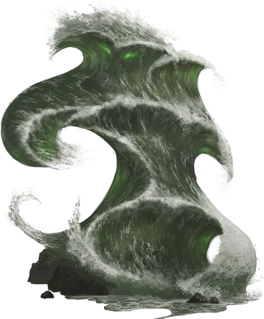

Ольгидра
Olhydra
Огромный Элементаль, нейтрально-злой, именной НИП

Класс Доспеха 18 (природный доспех)
Хиты 324 (24к12 + 168)
Скорость 50 футов, плавая 100 футов
| мод | спас | ||
|---|---|---|---|
| СИЛ | 21 | +5 | +11 |
| ЛОВ | 22 | +6 | +6 |
| ТЕЛ | 24 | +7 | +13 |
| мод | спас | ||
|---|---|---|---|
| ИНТ | 17 | +3 | +3 |
| МДР | 18 | +4 | +10 |
| ХАР | 23 | +6 | +6 |
Сопротивление урону электричество; дробящий, колющий, рубящий от немагических атак
Иммунитет к урону кислота, холод, яд
Иммунитет к состояниям окаменение, опутанность, отравление, сбивание с ног, паралич, очарование, испуг
Чувства слепое зрение 120 футов, пассивное Восприятие 14
Языки Акван
Опасность 18 (20000 опыта)
Бонус мастерства +6
Особенности
Усиленные удары. Размашистые удары Ольгидры считаются магическими при преодолении сопротивления или иммунитета к атакам немагическим оружием.
Врождённое колдовство. Базовой характеристикой Ольгидры является Харизма (Сл спасброска от заклинаний 20, +12 к попаданию заклинаниями). Она врождённо может накладывать следующие заклинания, не нуждаясь в материальных компонентах:
• Неограниченно: ледяная стена [wall of ice]
• 3/день: град [ice storm]
• 1/день: гроза гнева [storm of vengeance]
Легендарное сопротивление (3/день). Если Ольгидра проваливает спасбросок, она может вместо этого сделать спасбросок успешным.
Сопротивление магии. Ольгидра совершает с преимуществом спасброски от заклинаний и прочих магических эффектов.
Водяное тело. Ольгидра может входить в пространство враждебных существ и останавливаться там. Она может перемещаться сквозь пространство шириной в 1 дюйм без протискивания.
Действия
Мультиатака. Ольгидра совершает две атаки размашистыми ударами или создаёт две струи воды.
Размашистый удар. Рукопашная атака оружием: +11 к попаданию, досягаемость 10 фт., одна цель. Попадание: дробящий урон 21 (3к10 + 5), и цель становится схваченной (Сл высвобождения 19). Ольгидра может схватить не больше четырёх целей. Когда Ольгидра перемещается, все схваченные ею существа перемещаются вместе с ней.
Струя воды. Дальнобойная атака оружием: +12 к попаданию, дистанция 120 фт, одна цель. Попадание: дробящий урон 21 (6к6), и цель должна преуспеть в спасброске Силы Сл 19, иначе будет сбита с ног.
Призыв элементалей (1/день). Ольгидра призывает до трёх водяных элементалей, теряя по 30 хитов за каждого элементаля, вызванного таким образом. Призванные элементали имеют максимальное количество хитов и появляются в радиусе 100 футов от Ольгидры. Они исчезают, если хиты Ольгидры упадут до 0.
Легендарные действия
Ольгидра может совершить 3 легендарных действия, выбирая их из представленных ниже вариантов. За один раз можно использовать только одно легендарное действие, и только в конце хода другого существа. Ольгидра восстанавливает использованные легендарные действия в начале своего хода.
Сдавливание. Ольгидра сжимает одно схваченное ею существо, нанося ему дробящий урон 21 (3к10 + 5).
Бросок (стоит 2 действия). Ольгидра освобождает одно из схваченных ею существ, выстреливая им в направлении по своему усмотрению на расстояние до 60 футов.
Если брошенное таким образом существо столкнётся с твердой поверхностью, например стеной или полом, оно получит дробящий урон 1к6 за каждые 10 футов броска.
Воду в кислоту (стоит 3 действия). Ольгидра превращает воду, из которой состоит её тело, в кислоту. Этот эффект длится до следующего хода Ольгидры.
Любое существо, которое физически взаимодействует с Ольгидрой или попадает по ней рукопашной атакой, находясь в 5 футах от неё, получает урон кислотой 11 (2к10). Любое существо, схваченное Ольгидрой, получает в начале своего хода урон кислотой 22 (4к10).
Логово
Родина Ольгидры — Стихийный План Воды, где она живет в чёрной бездне бесконечного моря, восседая на троне среди колючих рифов. Ольгидра ждёт момента, когда она сможет прорваться на Материальный План через элементальные узлы воды, или когда её вызовут при помощи определённого ритуала. Находится ли она в своих владениях или внутри узла воды — Ольгидра может повелевать водами вокруг себя, придавая им любую форму, какую захочет.
Действия логова
Ольгидра может управлять водой вокруг себя, используя действия логова на Стихийном Плане Воды или в любом водяном элементальном узле (например, внутри Ниспадающих Потоков, описанных в главе 5). При значении инициативы «20» (в случае ничьей проигрывает всем конкурентам) Ольгидра использует действие логова, чтобы вызвать один из следующих эффектов:
• В водоёмах, расположенных в логове, поднимаются волны, которые обрушиваются на берег. Все существа, находящиеся в пределах 20 футов от такого водоёма, должны преуспеть в спасброске Силы Сл 20, иначе будут сбиты с ног и затянуты отступающей волной в воду на 20 футов.
• Вода в пределах 120 футов от Ольгидры становится тёмной и непрозрачной. В такой воде не могут видеть существа с тёмным зрением, и свет не может осветить её. Эффект заканчивается в следующем раунде при значении инициативы «20».
• Ледяной туман заполняет сферу, радиусом 40 футов, расположенную в пределах 120 футов от Ольгидры. Существа и объекты, находящиеся внутри тумана или за ним, считаются сильно заслонёнными. Существо, которое впервые за ход входит в облако ледяного тумана или начинает там свой ход, получает урон холодом 10 (3к6).
Облако рассеивается в следующем раунде при значении инициативы «20».
Местные эффекты
Присутствие Ольгидры в элементальном узле создает целый ряд эффектов, оказывающих влияние на окрестности: там портится погода, усиливаются волны, а хищные морские создания становятся более агрессивными.
• В пределах 10 миль от логова Ольгидры начина ют идти дожди ужасной силы. Они начинаются каждые 2к12 часов и продолжаются 1к3 часа. Эти дожди настолько сильны, что обычная скорость существ, перемещающихся по суше в этой области, сокращается вдвое.
• В пределах 5 миль от логова волны и течения становятся исключительно сильными и коварными. В этих водах все проверки характеристик для безопасного управления судном совершаются с помехой.
• Когда водные существа со значением Интеллекта 2 или ниже подплывают ближе, чем на 1 милю к логову, они должны совершить спасбросок Мудрости Сл 15. При успехе до тех пор, пока существа не покинут эту область, они остаются испуганными. При провале существо становится в высшей степени агрессивным и не может покинуть область на протяжении 24 часов. Пока существа находятся в таком состоянии, они совершают спасброски против эффектов страха и очарования с преимуществом.
• В пределах 1 мили от логова природные источники и водоёмы создают временные порталы на Стихийный План Воды, пропуская в мир смертных элементальных существ, которые будут обитать неподалёку от таких мест.
Если Ольгидра уничтожена или изгнана на свой родной план, местные эффекты рассеиваются в течение следующих 1к10 дней.
Описание
Титул Принцессы Злой Воды принадлежит Ольгидре, которую также называют Сокрушительной Волной, Тёмным Приливом или Источником Бесконечных Страданий. Как правило, она принимает форму гигантской волны, высотой 20 футов и шириной 15 футов с мерцающими глазами. Она не любит уходить далеко от больших водоёмов: морей, озёр, рек или бассейнов с подземными водами.
Конечно, когда необходимо, она может обрушиться на берег, подобно цунами, но только крайне сильное чувство гнева или отчаяния заставят Ольгидру отойти от родной стихии больше чем на несколько сотен футов.
Ольгидра безустанно и неуклонно движется к своей цели. Ей нравится создавать опасные и разрушительные проявления водной стихии, например, устраивать потопы и водовороты. Она обожает доказывать свою силу, разбивая в щепки любое судно, осмелившееся вторгнуться в её царство, и опустошая деревни и города, возведённые около её владений. Всё, что она не может потопить или уничтожить несколькими мощными ударами, она разрушает постепенно и не торопясь: Ольгидра терпелива и отступает только затем, чтобы вернуться ещё сильнее, чем прежде.
Из всех принцев Элементального Зла Ольгидра больше всего заинтересована в смертных. Она понимает, что пираты и морские разбойники, которые окрашивают воды её царства кровью живых существ (а, порой, и отправляют к ней в руки корабли, чьи трюмы набиты сокровищами), служат орудием её злой воли, и неважно, знают они об этом или нет. Поэтому Принцесса Злой Воды иногда щадит самых жестоких мореходов, терпеливо ожидая, когда те выплатят ей кровавый выкуп за свои жизни.